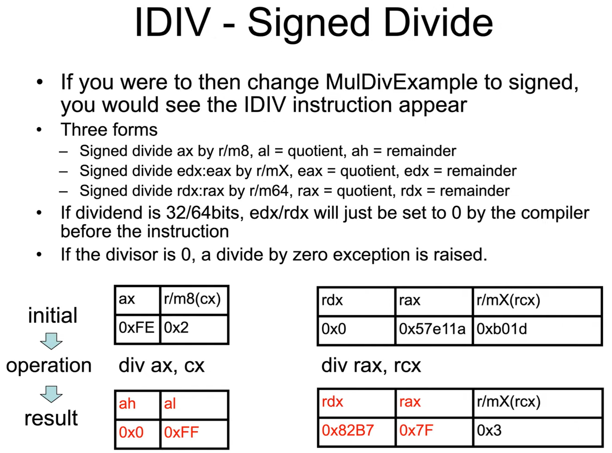

The remainder takes on the sign of the dividend.
Example from a simple C program:
8 / 3: quotient = 2, remainder = 2
-8 / 3: quotient = -2, remainder = -2
8 / -3,: quotient = -2, remainder = 2
-8 / -3: quotient = 2, remainder = -2
